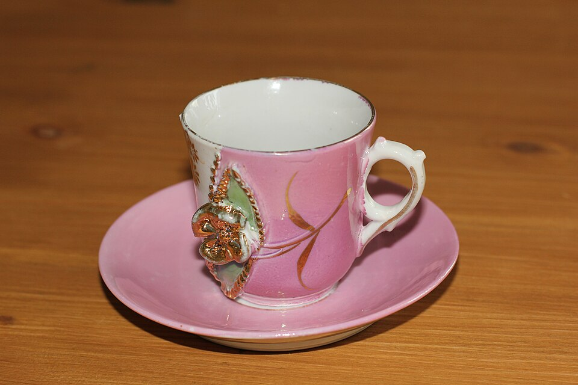

文字、图片，一起检索
文搜图、图搜图、图文组合查询。比较先生成描述和直接编码原图两种思路。
查看多模态示例 →给一张图，找相似商品；写一句话，搜自己的图库。沿着两条检索路线，动手理解 Qwen 微调、向量编码和对比学习。
代码、训练方法与实验记录公开 · 可接入自己的图片库
Qwen 识别意图与数量 → 原图向量检索 → 返回 2 张

从一条自然语言请求出发，逐步走到数据、模型训练与可靠评测。每个知识点都有对应的实现或实验可读。
文搜图、图搜图、图文组合查询。比较先生成描述和直接编码原图两种思路。
查看多模态示例 →Qwen 判断是否检索、找什么、要几张。“请解释一下”与“帮我找两张”走不同路径。
阅读意图解析 →训练类别 JSON 输出，对照语言 LoRA 与视觉连接层联合训练；用推理生成的描述建立语义索引。
查看 Qwen 训练 →使用 EmbeddingGemma 2 编码原图和查询，不必先把所有视觉信息压缩成一段描述。
查看模型与配置 →多正样本 InfoNCE、文图／图图训练与困难负样本。把同类样本保留为正例，避免误作负例。
查看对比学习训练 →固定数据划分、验证选参、F1 与 mAP；再用格式归一化和类别筛选消融，检查收益来自哪里。
查看收益归因 →把图片变成可读的语义信息。先筛类别，再匹配描述，方便观察模型理解了什么，也需要面对漏召回与描述信息损失。
直接优化图片与查询的向量关系。检索不依赖 Qwen 类别硬筛选；同一数据上保留微调前后的对照。
下面统一显示检索 F1。训练／验证／测试为 4,500／1,000／2,000 张；统计五个主要类别，阈值在验证集选定。
| 检索路线 | 文搜图 · 基座 → 微调 | 图搜图 · 基座 → 微调 |
|---|---|---|
| Qwen 类别 + 描述 | 76.07% → 86.76% | 63.90% → 81.86% |
| Embedding 对比学习 | 61.68% → 88.84% | 31.85% → 83.40% |
Qwen 为事后补充消融，复用冻结原始输出并在验证集重选阈值；Embedding 保留原始固定协议。格式恢复后仍有收益，但不等于纯视觉能力提升。
类别相关性评测，不代表颜色、材质或同款商品准确率。单随机种子；保留失败案例。12 张图片的演示与 2,000 张图库的正式实验分开。
把相关图片和元数据交给多模态模型，可以继续探索基于证据的问答、商品咨询或素材助手。
本仓库提供可接入 RAG／Agent 的检索组件。你可以先完成自己的图片库检索，再扩展回答生成与工具调用。
查看接入思路与学习路线 →用户请求 → Qwen 意图路由 → 图片检索 → 图片 ID 与元数据
检索证据 → 多模态回答生成 → 来源引用 → 回答质量评测
当前不是完整 RAG 问答系统，也没有内置完整 Agent 编排平台。
切换图片检索与非检索请求，观察类别、数量与失败示例。
打开演示 →准备图片清单，用公开基座建库，检索自己的素材或商品。
接入数据 →分别学习 Qwen SFT 与 Embedding 对比学习，理解正确监督与负例。
进入训练指南 →固定测试集，比较指标与错误案例，解释改进而不只追求涨分。
阅读实验记录 →网页无需算力。默认配置使用公开基座；作者微调权重暂未分发，复现微调版需自行训练。模型训练需要相应 GPU／NPU，详见环境与数据指南。
如果这个项目对你有帮助，欢迎 Star 留作学习索引。也欢迎提交真实失败案例与可复现的改进。